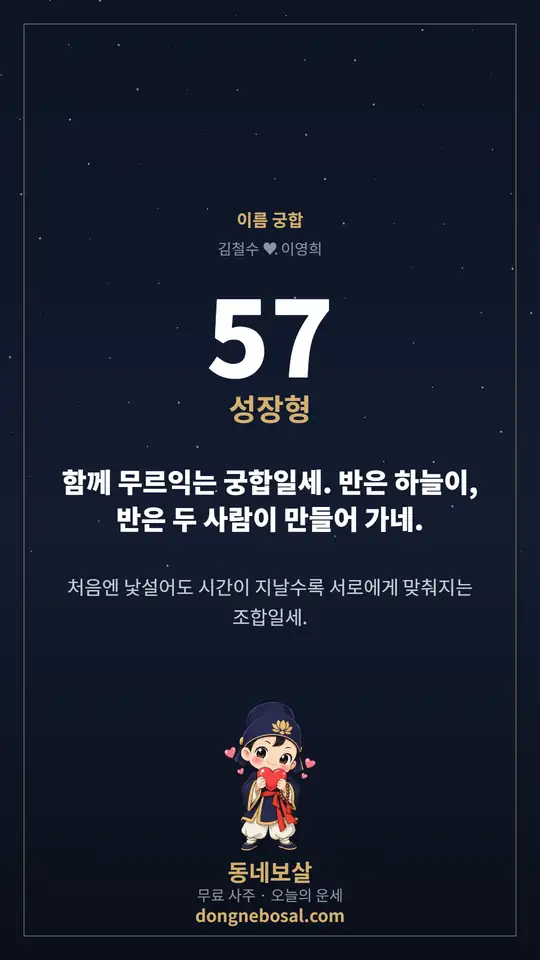

이 게시물은 쿠팡 파트너스 활동의 일환으로, 이에 따른 일정액의 수수료를 제공받습니다.
이름 궁합 테스트
학창시절 노트 구석에서 해본 그 계산입니다. 두 사람의 이름 글자를 번갈아 한 줄로 놓고 글자마다 한글 획수를 적은 뒤, 이웃한 숫자끼리 더해 일의 자리만 남기며 한 줄씩 줄여 나갑니다. 마지막에 남은 두 자리가 이름궁합 점수입니다.
이 이름궁합 테스트는 한글 자모(초성·중성·종성)의 획수를 자동으로 세고, 줄여 가는 과정을 피라미드로 보여줍니다. 글자마다 획수가 어떻게 나왔는지도 함께 보여 주니, 손으로 하던 계산을 그대로 따라가며 확인할 수 있습니다.
해 보면 알게 되는 규칙이 세 가지 있습니다. 첫째, 누구 이름을 먼저 쓰느냐에 따라 점수가 달라집니다. 번갈아 놓는 순서가 바뀌면 이웃끼리 더하는 짝이 전부 바뀌기 때문입니다. 김철수와 이영희를 이 순서로 넣으면 57점, 이영희를 먼저 넣으면 97점이 나옵니다. 둘째, 성을 넣느냐 빼느냐도 결과를 바꿉니다. 같은 두 사람이 철수와 영희로만 넣으면 58점입니다. 셋째, 한글 획수를 세는 기준이 사이트마다 다릅니다. 이 도구는 글자를 이루는 선의 수(선분수)로 세는 방식(ㄱ=2, ㅎ=3)을 쓰므로 다른 사이트와 점수가 다를 수 있습니다. 한 번 정한 방식을 계속 쓰는 편이 비교하기 좋습니다.
물론 통계적·명리학적 근거는 없습니다. 순수하게 재미로 만들어진 놀이이고, 생년월일로 보는 진지한 궁합은 사주 궁합을 이용하세요.
결과는 이런 카드로 저장됩니다
두 이름을 넣고 나면 '이미지로 저장'으로 휴대폰 화면 비율(9:16) 카드를 받을 수 있습니다. 점수와 궁합 유형, 보살의 한마디가 담겨 스토리에 바로 올릴 수 있습니다.

이렇게 계산해요
- 두 이름을 한글로 적습니다. 성까지 넣고, 첫 번째 이름이 먼저 놓입니다.
- 두 이름의 글자를 한 글자씩 번갈아 한 줄로 놓습니다. 글자 수가 다르면 남는 글자가 뒤에 이어 붙습니다.
- 글자마다 초성·중성·종성의 획수를 더합니다. 첫 줄에는 그 획수의 일의 자리만 씁니다.
- 이웃한 두 숫자를 더해 일의 자리만 남기며 한 줄씩 줄여 갑니다. 숫자가 두 개 남을 때까지 되풀이합니다.
- 마지막 두 자리가 궁합 점수입니다. 00이 남으면 100점으로 봅니다.
점수대별 다섯 가지 유형
마지막 두 자리 점수에 따라 관계의 결을 다섯 가지로 나눠 풀이합니다. 점수가 낮다고 나쁜 짝이라는 뜻은 아닙니다.
리듬이 거의 같은 짝. 말하지 않아도 다음 행동이 짐작될 만큼 편하지만, 너무 닮아 새로움이 줄어들 수 있습니다.
기본 호흡이 잘 맞아 큰 갈등 없이 오래 가는 짝. 무난함에 익숙해져 서로의 변화를 놓치기 쉽습니다.
처음엔 낯설어도 시간이 갈수록 맞춰지는 짝. 한쪽만 양보한다고 느끼지 않도록 번갈아 맞추는 게 좋습니다.
끌리는 힘과 밀어내는 힘이 함께 있는 짝. 지루할 틈이 없는 대신 좋을 때와 나쁠 때의 온도차가 큽니다.
결이 완전히 다른 짝. 같은 말을 다르게 알아듣기 쉬워 이해에 시간이 걸리지만 서로 배울 것이 많습니다.
예시로 보기 — 김철수 ♥ 이영희
한글 획수표 — 이 도구의 기준
글자의 획수는 초성 + 중성 + 종성의 합입니다. 예를 들어 '김'은 ㄱ(2)+ㅣ(1)+ㅁ(4)=7획, '철'은 ㅊ(4)+ㅓ(2)+ㄹ(5)=11획입니다. 이 도구는 글자를 이루는 선의 수(선분수)로 세므로 ㄱ은 2, ㅎ은 3입니다. 글씨를 쓸 때의 획 수로 세는 방식(ㄱ=1)도 있어서 사이트마다 점수가 다를 수 있습니다.
자음
쌍자음
모음
복합 모음
겹받침
쌍자음은 같은 자음을 두 번, 복합 모음과 겹받침은 구성 자모를 더한 값입니다. 받침이 없으면 초성과 중성만 더합니다.
이름궁합 테스트, 이렇게 해 보면 더 재미있어요
- 성까지 넣어 보고, 성을 뺀 이름만도 넣어 보세요. 두 점수를 나란히 놓으면 재미있습니다.
- 이름 1·2의 자리를 바꿔 보세요. 결과 화면에 반대 순서의 점수도 함께 나옵니다.
- 여러 쌍을 비교할 때는 한 가지 방식(성 포함 여부, 순서)으로 통일하세요.
- 별명이나 애칭도 한글이면 계산됩니다. 점수는 놀이일 뿐이니 가볍게 즐겨 주세요.
- 점수보다 '맞춰 가면 좋은 점'과 '조언'을 읽어 보세요. 점수가 낮은 조합에도 도움이 되는 말이 있습니다.
다른 궁합도 해 보세요
이름궁합이 획수로 보는 놀이라면, 사주 궁합은 생년월일로 두 사람의 일간 관계·띠의 합충·오행 보완을 봅니다. 별자리로 보는 궁합도 있습니다.
이것만은 확인하세요
- 재미용입니다. 통계적·학술적 근거가 없습니다.
- 획수 기준은 사이트마다 다릅니다. 이 도구는 선분수(ㄱ=2, ㅎ=3)로 셉니다. 같은 이름도 다른 사이트와 점수가 다를 수 있습니다.
- 이름 순서를 바꾸면 결과가 달라집니다. 계산 방식의 특성입니다.
- 한글 이름 기준입니다. 영문·숫자는 계산에서 빠집니다.
- 진지한 궁합은 사주 궁합을 보세요. 명리학 기반 분석이 따로 있습니다.
자주 묻는 질문
이름궁합 테스트는 어떻게 계산하나요?
두 이름의 글자를 한 글자씩 번갈아 한 줄로 놓고, 글자마다 한글 획수를 적습니다. 이웃한 두 숫자를 더해 일의 자리만 남기며 한 줄씩 줄이고, 마지막에 남은 두 자리가 궁합 점수입니다.
이 방식은 뭔가요?
이름 획수를 번갈아 놓고 이웃끼리 더해가는 전통 놀이(속칭 이름궁합 테스트)입니다. 학창 시절 노트에 적어 보던 그 계산을 자동으로 해 줍니다.
실제 궁합인가요?
재미용입니다. 통계적·명리학적 근거는 없습니다. 생년월일로 보는 진지한 궁합은 사주 궁합 보기를 이용하세요.
한글 획수는 어떻게 세나요?
글자를 초성·중성·종성으로 나눠 각 자모의 획수를 더합니다. 이 도구는 글자를 이루는 선의 수로 세는 방식(ㄱ=2, ㅁ=4, ㅣ=1)이라 '김'은 7획입니다. 쌍자음·겹받침·복합 모음은 구성 자모를 더합니다. 페이지의 한글 획수표에서 전체 값을 볼 수 있습니다.
이름 순서를 바꾸면 점수가 왜 달라지나요?
번갈아 놓는 순서가 바뀌면 이웃끼리 더하는 짝이 전부 달라지기 때문입니다. 김철수와 이영희를 이 순서로 넣으면 57점, 이영희를 먼저 넣으면 97점입니다.
성도 같이 넣어야 하나요?
성까지 넣는 방식이 가장 흔합니다. 성을 빼면 글자 수와 획수가 달라져 점수가 바뀝니다(철수와 영희는 58점). 비교할 때는 한 가지 방식으로 통일하세요.
다른 사이트와 점수가 왜 다른가요?
한글 획수를 세는 기준(ㄱ=1로 세는 방식과 ㄱ=2로 세는 방식 등), 이름을 놓는 순서, 성을 넣는지가 사이트마다 달라서입니다. 어느 쪽이 정답이라고 할 수 없는 놀이라, 같은 방식으로 여러 쌍을 비교하는 용도로 쓰는 편이 좋습니다.
영어 이름도 되나요?
한글 이름 기준입니다. 한글로 적어 계산해 보세요. 영문·숫자는 계산에서 빠집니다.
두 이름의 글자 수가 다르면 어떻게 되나요?
짧은 쪽이 먼저 끝나고 남은 글자가 뒤에 이어 붙습니다. 첫 번째 이름의 글자가 먼저 놓입니다.
점수가 낮으면 안 맞는 사이인가요?
아닙니다. 숫자를 줄여 가다 나온 값일 뿐 실제 관계와는 별개입니다. 점수가 낮은 조합도 풀이는 '맞춰 가면 좋은 점'과 조언 중심으로 안내합니다.
마지막 두 자리가 00이면 몇 점인가요?
이 도구는 00이면 100점으로 표시합니다. 05처럼 앞자리가 0이면 5점으로 표시합니다.
점수대는 어떻게 풀이하나요?
90점 이상 운명형, 75~89점 안정형, 55~74점 성장형, 35~54점 밀당형, 34점 이하 도전형의 다섯 유형으로 풀이합니다. 위의 '점수대별 다섯 가지 유형'을 참고하세요.